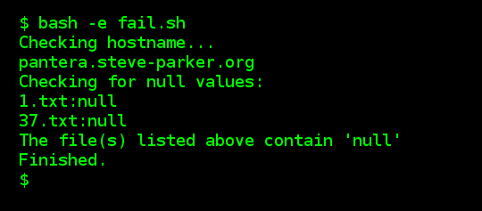
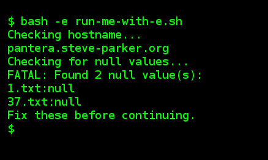
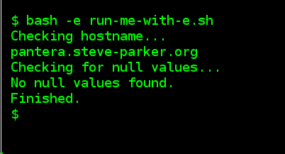

18 September 2017
Failing on Errors, whilst also Checking for Errors
An Apparently Contradictory Position
The "-e" option to a shell script causes it to abort on failure. That can be a very useful fail-safe. Today, I was using it in conjunction with Jenkins CI. If any step in the script fails, the entire job fails, and the dashboard turns RED - that is a convenient combination. A single failure in a shell script automatically updates a GUI; something like this:
(Note: This can also be used in conjunction with trap on error, to report where the failure occurred, rather than just aborting without giving a clue as to the reason.)
Here is a simple example of a script: fail.sh. The job had created some files, and I wanted to check that none of them were reporting "null" in their output, so I wrote something similar to this:
#!/bin/bash
# This script is expecting to be run as:
# bash -e fail.sh
# Therefore, the first failure will cause
# the entire script to abort.
trap die ERR
die()
{
echo "Failed at line $BASH_LINENO"
exit 1
}
echo "Checking hostname..."
hostname -f
echo "Checking for null values:"
grep -w null *.txt
if [ "$?" -eq "0" ]; then
echo "The file(s) listed above contain 'null'"
else
echo "No null values found."
fi
echo "Finished."
The Problem with this Script
The grep command will fail if no "null" values are found. The script will fail at this line (line number 18), and so if there are no null values, the script execution looks like this:
If some null values are found, then the execution looks like this:
This did not do what I wanted, because:
- When it didn't find 'null' entries (indicating Success), the script failed, and it didn't even say why.
- When it did find 'null' entries, I wanted it to fail, but actually the script kept running.
Although our "die()" function gets called on failure, and tells us where the script failed, that isn't particularly informative, and it isn't able to explain the context - that it was checking for an absence of 'null' strings in the text files.
One Solution: Avoid the situation entirely
One solution is to turn off the "-e" facility, and re-enable it afterwards. This can be done via "set +e" before the problematic code, and "set -e" afterwards. But that assumes that the script will always be run via "-e". Also, it breaks the assumption that "this script will fail on any error", which is a useful blanket statement to be able to make about a script.
A Better Solution: Ensure the code always succeeds
The "grep" command failed because it didn't find the string it was looking for.
We can work around this by using grep in different ways. My chosen solution was to use grep to count the number of times it found the word 'null'. By using cat to pipe all the files into "grep -c", I can get a tally of the number of matches found, and save that into a variable, $n:
n=`cat *.txt | grep -c -w "null" || /bin/true`
The "|| /bin/true" ensures that even if the "cat | grep" fails (either because cat finds no "*.txt" files, or the grep doesn't find any matches), the overall statement will succeed, and the script will not abort. This is the crucial element.
That leads us to this code: run-me-with-e.sh
#!/bin/bash
# This script is expecting to be run as:
# bash -e run-me-with-e.sh
# Therefore, the first failure will cause
# the entire script to abort.
trap die ERR
die()
{
echo "Failed at line $BASH_LINENO"
exit 1
}
echo "Checking hostname..."
hostname -f
echo "Checking for null values..."
n=`cat *.txt | grep -c "null" || /bin/true`
if [ "$n" -eq "0" ]; then
echo "No null values found."
else
echo "FATAL: Found $n null value(s)":
grep null *.txt
echo "Fix these before continuing."
exit 1
fi
echo "Finished."
If this finds some 'null' values, it will run like this:
If it doesn't find any, it will run like this:
This ensures that if 'null' values are found, the script aborts (causing Jenkins to go red), and displays a meaningful error message. Otherwise, it continues as normal.
No unexpected error conditions were encountered, so the die() function was never invoked. That is good; the die() function should only be called for unexpected errors. This anticipated error was dealt with by the code, reported properly, and the script displayed a sensible error message, and returned a failure exit code, causing Jenkins to turn red, which was the important thing in this situation.
Summary
This might not seem the cleanest solution: Invoking cat to pass text to grep only to run the grep again if it finds something worth reporting. But this method - basically, just adding a "|| /bin/true" to ensure the script doesn't abort, and rewording the test so that we can still find out whether the test found the 'null' word or not, allows us to maintain the overall approach that the script will only fail on unexpected errors, yet still be able to detect and report anticipated errors.
You can buy the content of this tutorial as a PDF to download to all of your devices!
Contact
You can mail me with this form. If you expect a reply, please ensure that the address you specify is valid. Don't forget to include the simple addition question at the end of the form, to prove that you are a real person!